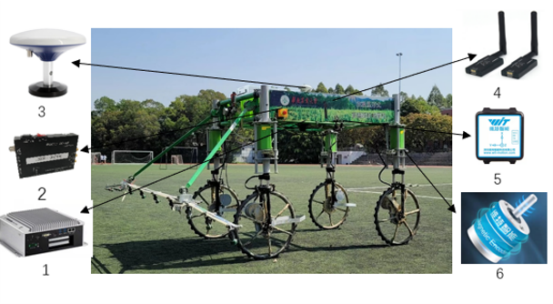
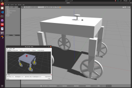
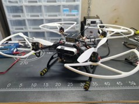
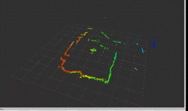
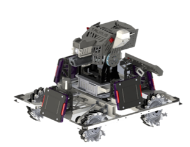
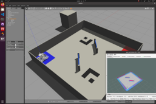
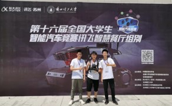
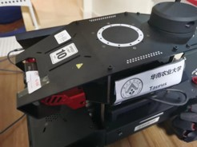

Lebin Liang
Shenzhen, Guangdong, China | +86 13610140855 | michael_b@qq.com
Mobile Robotics | Embedded Systems | Hardware Design | Autonomous Driving | ROS
About Me
A highly motivated Master's student at SIAT, University of Chinese Academy of Sciences, specializing in Electronic Information. I possess a strong passion for mobile robotics, embedded systems, and autonomous driving, complemented by a proven ability to translate theoretical knowledge into practical, impactful projects. With extensive experience in robotics development and collaborative teamwork, I am eager to tackle challenging problems and contribute to innovative technological advancements.
I am actively seeking overseas PhD positions for Fall 2026 enrollment or later, with a dedicated research focus on the intersection of HCI and HRI. My ambition is to contribute to pioneering research and development in intelligent autonomous systems.
Education
University of Chinese Academy of Sciences (UCAS), Shenzhen Institutes of Advanced Technology (SIAT)
M.S. in Electronic Information (Expected: June 2026)
- GPA: 3.77/4.0
- Admitted through Postgraduate Recommendation Program (Tuition-Waiver Scholarship)
South China Agricultural University (SCAU)
B.Eng. in Agricultural Mechanization and Automation (Sept 2019 - June 2023)
- GPA: 4.36/5.0 (Major Rank: 1st)
- Double First-Class University Initiative Institution
Awards & Publications
Selected Awards
- IEEE ICRA 2024 RoboMaster University Sim2Real Challenge Second Prize (June 2024)
- 21st National Collegiate RoboMaster Competition - Super Confrontation National First Prize (Aug 2022)
- 21st National Collegiate RoboMaster Competition - University League (Automated Infantry) First Prize (Nov 2022)
- 16th National University Smart Car Competition - iFlytek Smart Restaurant Group National First Prize (Aug 2021)
- Guangdong Provincial Collegiate Electronic Design Contest Provincial First Prize (Oct 2020)
Publications
- A Real-time Framework for UAV Indoor Self-Positioning and 3D Mapping Base on 2D Lidar, Stereo Camera and IMU (First Author) IEEE RCAR 2023
- Design and Experiment of Navigation Control System for Translational Row Shifting of Four-Wheel Steering Boom Sprayer (Second Student Author) Transactions of the Chinese Society for Agricultural Machinery, 2023
Projects & Experience
Legged Robot Development
Robotics Intern @ Sony China Research Institute (RDC Shenzhen) (2025 - Present)
- Designing and developing the lower-level system for legged robots, including multi-joint motor and servo control based on STM32F407.
- Responsible for PCB hardware design of driver boards, incorporating communication protocols such as CAN, high-speed RS485, and EtherCAT.
- Engaging in dynamics modeling, reinforcement learning for motion control, and Sim2Real deployment within the Isaac Lab environment for legged robots.
- Implementing safety features including online disconnection-reconnection detection, emergency power-off, and power monitoring systems.
Key Technologies: STM32F407, FreeRTOS, CAN, RS485, EtherCAT, PCB Design, Isaac Lab, Reinforcement Learning, Sim2Real, Legged Robotics
Media:
Photos and video links for this project will be added here by the user.
4WD-4WS Autonomous Sprayer Navigation Control System
Project Lead (National Student Innovation and Entrepreneurship Training Program) (2021 - 2023)
- Led the development of a 4-wheel-drive, 4-wheel-steering agricultural sprayer equipped with RTK-GPS and IMU for precise autonomous row shifting and omnidirectional path tracking in large-scale fields.
- Constructed an 8-DOF chassis kinematic model and implemented PID-based trajectory tracking algorithms.
- Designed the embedded controller and a comprehensive vehicle communication system integrating CAN bus and USB.
- Achieved "Excellent" project completion, secured 1 software copyright, and co-authored 1 EI-indexed research paper.
Key Technologies: RTK-GPS, IMU, PID Control, Kinematic Modeling, CAN Bus, STM32, C/C++
Media:
 Indoor Autonomous Quadrotor UAV System with RGBD & LiDAR Fusion
Individual Project (Dec 2022 - May 2023)
- Developed VIO (Visual-Inertial Odometry) localization utilizing an RGBD camera for robust indoor positioning.
- Implemented precise UAV indoor position control based on the VIO localization data.
- Integrated single-line LiDAR for basic UAV navigation tasks and 3D environmental reconstruction.
- Managed UAV hardware selection, component integration, and complete system assembly.
- Deployed and calibrated VINS (Visual-Inertial Navigation System); conducted comparative analysis of VIO algorithms including ORB-SLAM2 and VINS-Mono.
- Engineered LiDAR point cloud projection transformation and constructed occupancy grid maps for navigation.
- Designed and validated the complete indoor UAV system through both simulation and real-world experiments.
Key Technologies: ROS, UAV, RGBD Camera, LiDAR, VIO, SLAM (VINS-Mono, ORB-SLAM2), 3D Reconstruction, Occupancy Grid Mapping, PX4, C++
Media:
 Autonomous Infantry Robot Development (RoboMaster Competition)
Navigation Team Lead @ Taurus Robotics Team (2021 - 2022)
- Led the navigation group in developing an autonomous infantry robot for the RoboMaster AI Challenge.
- Implemented full-field localization and autonomous navigation using Mecanum wheel encoder odometry, IMU, and LiDAR data fusion.
- Utilized traditional computer vision techniques for enemy armor plate recognition and fully autonomous target tracking and engagement.
- Built the overall ROS-based software architecture, including a Gazebo simulation platform, and managed low-level hardware and high-level software communication.
- Optimized navigation algorithms, designing a tf-transform-based "small-gyro" (anti-rotation chassis) trajectory following algorithm with dynamic obstacle avoidance capabilities.
Key Technologies: ROS, Gazebo, SLAM, Path Planning, Computer Vision, Mecanum Wheels, C++, Python, LiDAR, IMU
Media:
 National University Smart Car Competition
Team Captain / Member (2020 - 2021)
- **As Captain (2021, iFlytek Smart Restaurant Group):** Led the team to develop a Mecanum wheel robot. Implemented indoor localization and multi-task allocation (QR code recognition, target detection, autonomous navigation) using LiDAR & IMU. Built a ROS-based multi-task scheduling framework with a state machine.
- **As Member (2020, Outdoor Opto-Electronic Group):** Contributed to developing an Ackermann steering car model for indoor localization and optimal multi-target path planning using LiDAR, IMU, & wheel odometry. Designed its embedded controller.
- Responsible for project management, task planning, and system integration.
Key Technologies: ROS, Path Planning, State Machines, Embedded Control (Ackermann/Mecanum), LiDAR, IMU, QR Code Recognition, C/C++
Media:
 DJI RoboMaster High School Robotics Camp
Embedded Systems Teaching Assistant (2019 - 2022)
- Planned and organized multiple STEAM robotics summer/winter camps for over 100 high school students.
- Designed and delivered an embedded systems curriculum focused on an "Indoor Robot Logistics and Transportation" theme.
- Developed ROS driver packages for RoboMaster EP robots and created comprehensive teaching materials and tutorials.
Key Technologies: ROS, Embedded Systems Education, RoboMaster EP, C/C++, Curriculum Design
Media: